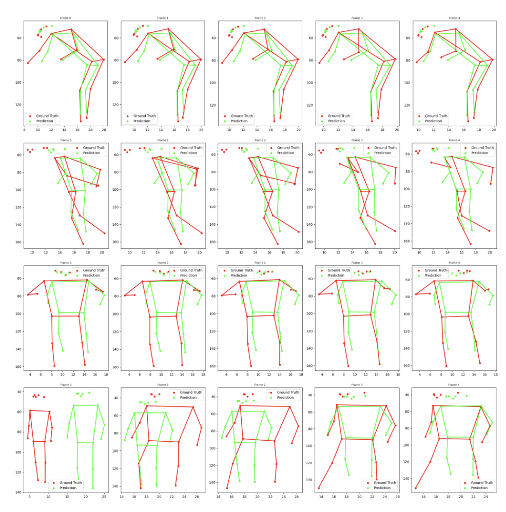
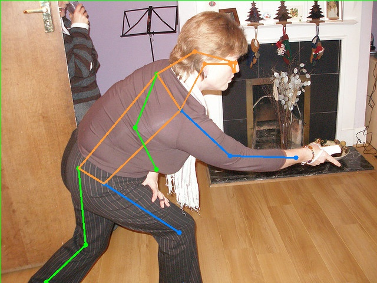
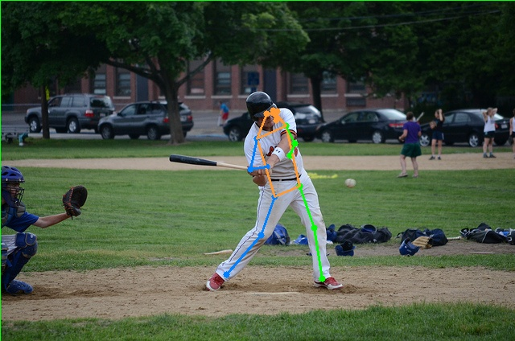

While modern pose estimation models such as ViTPose achieve strong performance on static keypoint detection, accurately predicting future human motion remains challenging due to temporal complexity and variability in human behavior. To address this, I built a human pose estimation and future pose prediction pipeline using a ViTPose backbone with a Feature Pyramid Network (FPN) to capture multi-scale spatial features and improve keypoint detection. The system was trained on approximately 14,000 pose sequences, using temporal windows of past frames to predict future joint trajectories. An initial baseline captured coarse motion trends but struggled with fine-grained joint accuracy and temporal consistency over longer prediction horizons. By refining the model with Smooth L1 Loss and extended training, I improved stability and alignment with ground-truth motion, resulting in more consistent frame-to-frame predictions. This work explores how to move beyond static pose estimation toward robust temporal modeling of human motion under real-world variability.